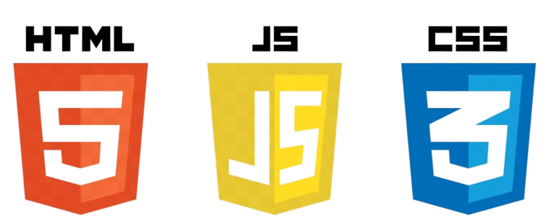

Desenvolvedora Front-end em evolução constante
Transformando ideias em interfaces reais com HTML, CSS e JavaScript, sempre aprendendo e evoluindo na prática.

Sobre mim
Apaixonada por tecnologia e inovação
Sou uma estudante de desenvolvimento web com foco em front-end, e tenho grande interesse em criar interfaces modernas, responsivas e funcionais. Estou em constante evolução, sempre aprendendo novas tecnologias e transformando esse aprendizado em projetos reais.